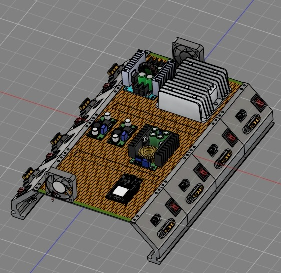
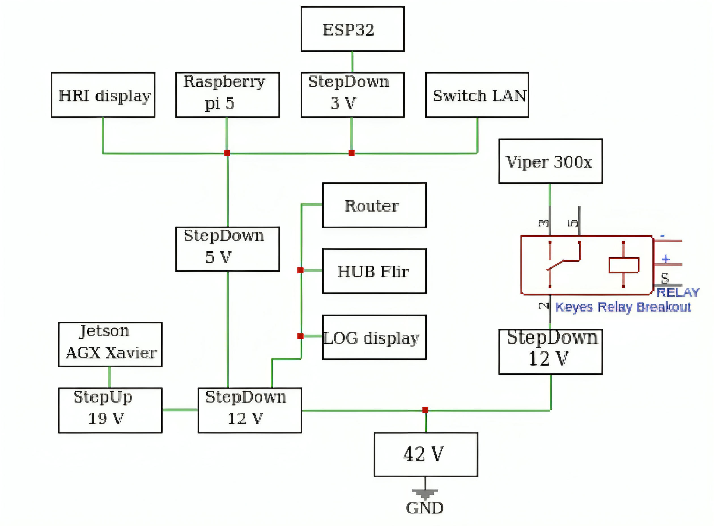
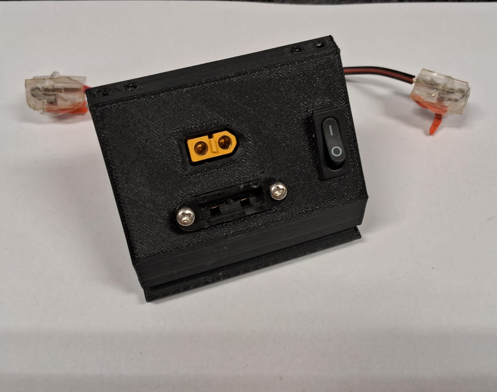

Centralized Power System
ECS_Box - Complete Tutorial
Step-by-step guide for assembly and configuration of the centralized power distribution system for robots.
Overview
Powering a complex robot often means wrestling with multiple battery voltages, messy wiring, and no easy way to safely switch individual components on or off. The ECS_Box (Electrical Central System Box) solves this by centralizing all power conversion and distribution into one modular enclosure.
It takes a battery input and provides regulated outputs at the exact voltages required by each robot component, reducing cable clutter and making troubleshooting dramatically simpler.

Figure 1: The complete ECS_Box system
Robot Requirements and Specifications
First of all, it's necessary to understand your components electrical specifications (voltage, current, and power consumption). Getting all this data is essential for the diagrams and for choosing the correct voltage converter for each component.
Important recommendations:
- Consult the datasheets for each component
- Record the nominal voltage required for each device
- Calculate the maximum current consumption of each component
- Sum the consumptions to determine the total battery capacity required
- Search for the correct voltage converters for each component

Figure 2: Electrical specifications diagram showing voltages and converters
Mounting and Assembly
Power Module Interface (PMI)
As a starting point of the mounting step, it's important to understand and manufacture the Power Module Interface (PMI) of the ECS_Box. The PMI is a 3D-printed interface that serves as an on/off switch and overcurrent protection for each component, allowing modularity and selectiveness of this stack.
Just like any other 3D-printed component, the PMI is completely customizable and must meet the specifications of your project. It can have any shape and size desired to fit your robot's condition and structure.

Figure 3: Power Module Interface (PMI) - 3D printed component for on/off control and overcurrent protection
Step-by-Step Assembly Process
- Design and 3D-print the Power Module Interface (PMI) to fit your robot's form factor and electrical requirements. Shape and size are fully customisable.
- Select a perforated plate as the base for your first prototype — it simplifies soldering positions and supports clean cable routing.
- Mount all voltage converters onto the perforated plate, positioned so their output cables reach the PMI cleanly.
- Run cables from the battery input to each converter, routing them through the plate to the rear side where management space is available.
- Connect converter outputs to the PMI, then route PMI outputs to their respective robot components.
- Terminate all shared connections at the rear using WAGO push-in connectors — these keep the system modular and allow easy reconfiguration.